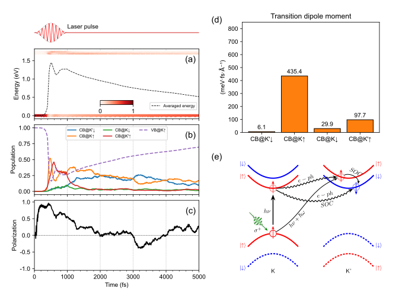
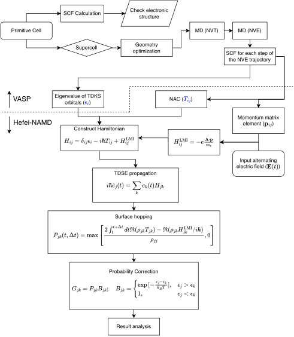
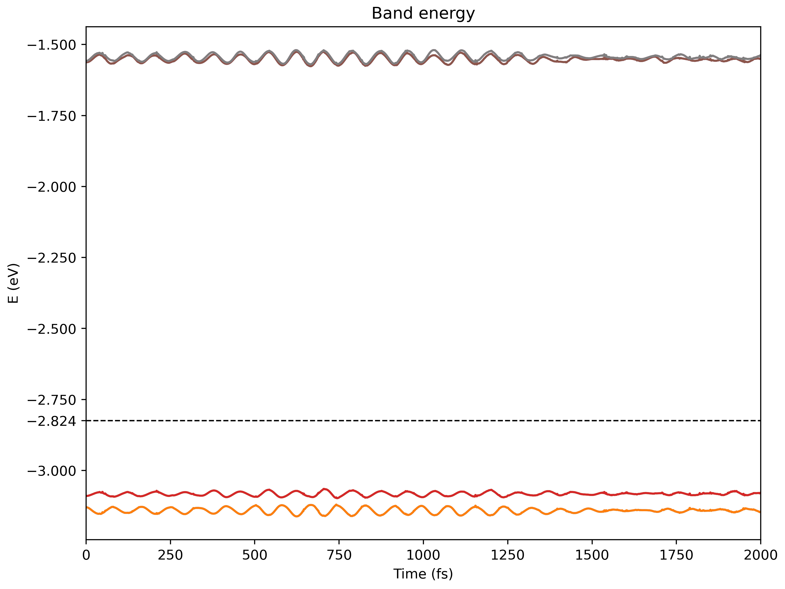
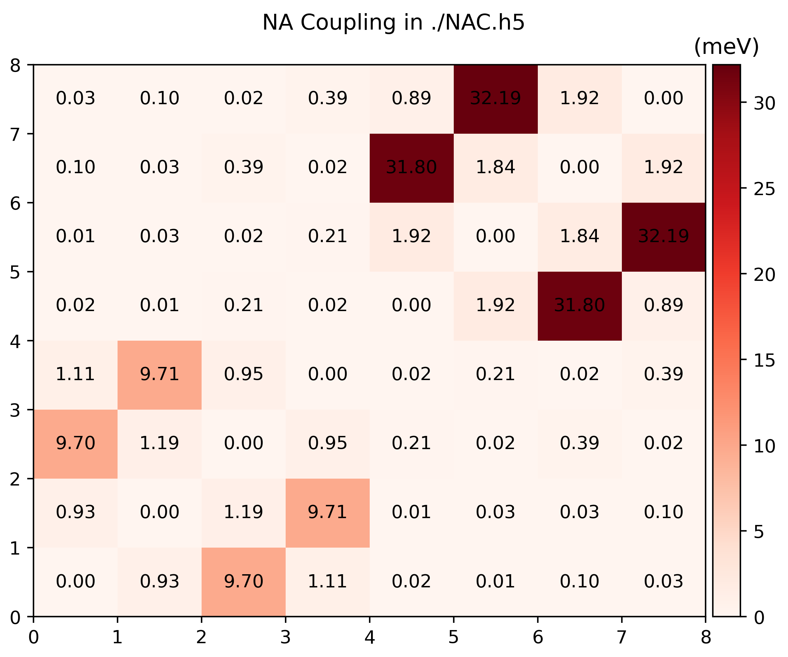
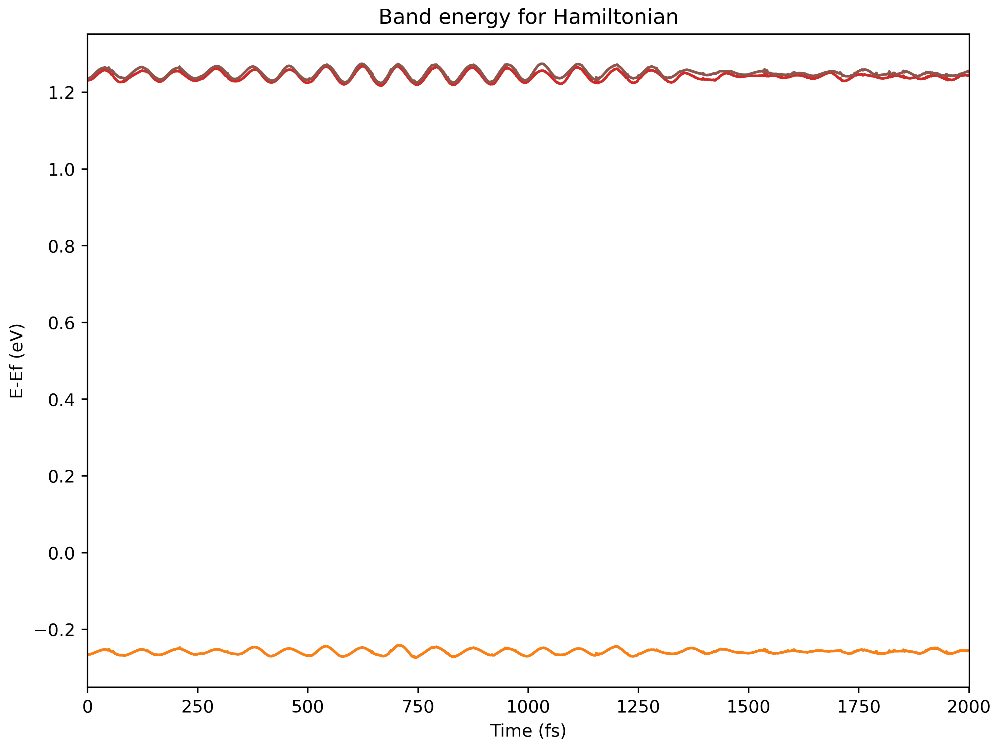
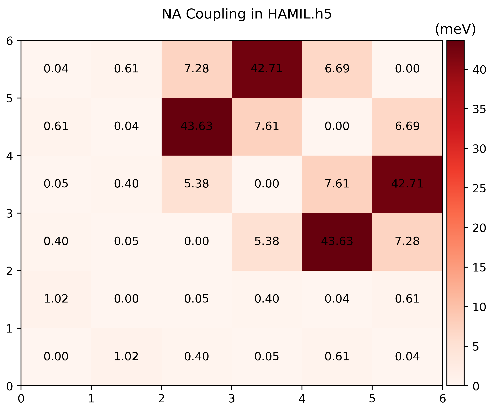
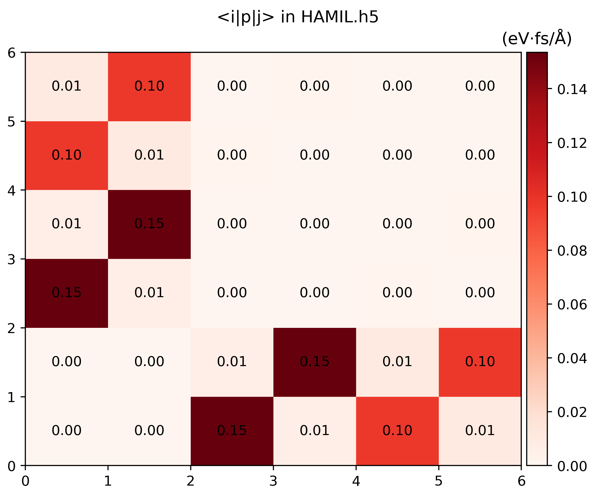
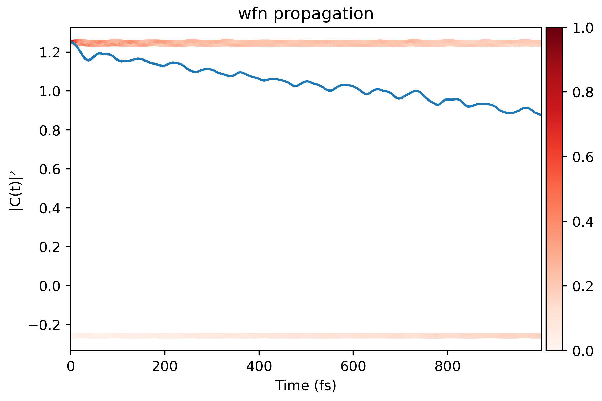
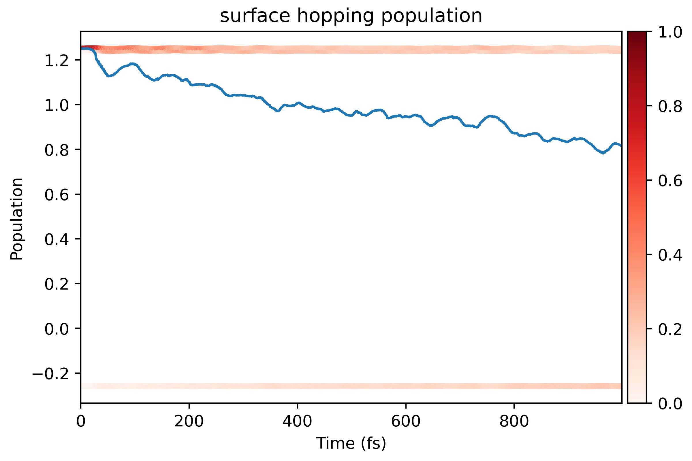

Introduction
NAMD-LMI is a subset of Hefei-NAMD with light-matter interaction (LMI) support.
Hefei-NAMD is an ab initio non-adiabatic molecular dynamics program to investigate the ultrafast excited carrier dynamics in real and momentum space, energy and time scale.
Now NAMD-LMI is capable to
- Study carrier dynamics in real space and energy relaxation without laser field at finite temperture;
- Study photo-excitaion process and stimulated emission process and carrier dynamics in the laser field at zero temperature;
- Study carrier dynamics both under the perturbation of phonon and LMI.
You may need watch the former tutorials to learn the basic concept and procedures of Hefei-NAMD in the following pages:

Installation
There are two ways to install NAMD-LMI, downloading the pre-built binaries or
building from scratch.
Download the binary from Github Release
We provide the pre-built binaries at Github Release.
There are several platforms we support with pre-built binaries, in which we can identify them by their file names parts:
- namd_lmi-
: the version of NAMD-LMI; - linux/macos/windows: which operating system it runs on;
- x86_64/aarch64: which CPU architecture it runs on;
- mkl-system/mkl-static/openblas-system/openblas-static: which BLAS
implementation and which link scheme, where
xxx-systemrequires you install corresponding BLAS implementation on system, whilexxx-staticstatically link against to BLAS (which means you needn't install anything else) but come with larger binary sizes. - .tar.gz/zip: which compressor format it uses. You need to decompress the binary first.
Example:
namd_lmi-1.0.0-linux-x86_64-mkl-system.tar.gzshould run on an x86 machine with 64-bit Linux installed, where the Intel-MKL should be installed.namd_lmi-1.0.0-macos-x86_64-mkl-system.tar.gzshould run on macOS with Intel chip.namd_lmi-1.0.0-macos-aarch64-mkl-system.tar.gzshould run on macOS with Apple Silicon.namd_lmi-1.0.0-windows-x86_64-mkl-static.zipshould run on Windows 7 or upper with Intel/AMD or other x86 chips.
Build from scratch
The build requires Internet accessibility and Rust toolchain, Intel-MKL libraries.
- If you haven't installed Rust toolchain, run
curl --proto '=https' --tlsv1.2 -sSf https://sh.rustup.rs | shand follow the instructions to configure it. When you finished the toolchain installation, you should be able to runcargoin command-line. Detailed instructions can be found here. - If you have installed Rust toolchain and Intel-MKL already, just run
cargo install --git https://github.com/Ionizing/NAMD-LMI. Several minutes later, thenamd_lmibinary should be installed to~/.cargo/bin, no need to modify the$PATH(or%PATH%on Windows).
There are four features to link BLAS implementations:
intel-mkl-system: dynamically link against pre-installed Intel-MKL library. You need to install Intel-MKL first.intel-mkl-static: statically link against Intel-MKL library. If no pre-installed MKL is found, it will download Intel-MKL 2020 from web by itself.openblas-system: dynamically link against pre-installed OpenBLAS. You need to install OpenBLAS first.openblas-static: statically link against OpenBLAS library. If no pre-installed OpenBLAS is found, it will download OpenBLAS source code and build it from scratch.
Test the installation
Once you obtain the namd_lmi binary, just put it in your PATH, and then you
should be able to run it with the output like
$ namd_lmi
+----------------------------------------------------------------------+
| |
| _ _ __ __ _____ _ __ __ _____ |
| | \ | | /\ | \/ || __ \ | | | \/ ||_ _| |
| | \| | / \ | \ / || | | | ______ | | | \ / | | | |
| | . ` | / /\ \ | |\/| || | | ||______|| | | |\/| | | | |
| | |\ | / ____ \ | | | || |__| | | |____ | | | | _| |_ |
| |_| \_|/_/ \_\|_| |_||_____/ |______||_| |_||_____| |
| |
+----------------------------------------------------------------------+
Welcome to use namd!
current version: 0.1.0
git hash: d659586
author(s): Ionizing
host: x86_64-unknown-linux-gnu
built time: 2024-11-19 15:34:05 +08:00
Usage: namd_lmi <COMMAND>
Commands:
nac Calculate non-adiabatic coupling (NAC) including `<j| d/dt |k>` and momentum matrix `<i| p |j>`
hamil Generate the Hamiltonian from NAC according to config file
surfhop Perform the surface-hopping process with given Hamiltonian file and config file
help Print this message or the help of the given subcommand(s)
Options:
-h, --help Print help (see more with '--help')
-V, --version Print version
Overall process
NAMD-LMI is divided into three parts: nac, hamil and surfhop, corresponding
to the calculation of non-adiabatic coupling, Hamiltonian and surface hopping.
- Run VASP like traditional Hefei-NAMD;
- Run
namd_lmi nac -c configto calculate non-adiabatic coupling. A visualization scriptnac_plot.pyis also available vianamd_lmi nac --generate pp. - Run
namd_lmi hamil -c configto generate Hamiltonian plus external field. The external field is described in a rhai script, which can be generated vianamd_lmi hamil --generate efield. A visualization scripthamil_plot.pyis also available vianamd_lmi hamil --generate pp. - Run
namd_lmi surfhop -c configto run surface hopping and get the real time evolution of the population. A visualization scriptsurfhop_plot.pyis also available vianamd_lmi surfhop --generate pp.

Non-adiabatic Coupling
In Hefei-NAMD non-adiabatic coupling (NAC) is defined as the derivative of wavefunctions
\begin{equation} \mathbf{D}_{jk} = \mel{\phi_j}{\dv{t}}{\phi_k} \end{equation}
where $\phi$ is the Kohn-Sham (KS) orbitals calculated by VASP.
To simulate photo-excitations process, momentum matrix element \(\mathbf{P}_{jk} = \mel{j}{\mathbf{p}}{k}\) is needed to calculate the light-matter interaction (LMI) term
\begin{equation} \mathcal{H}_{jk}^{\mathrm{LMI}} = -e \frac{\mathbf{A}}{m_e} \mel{j}{\mathbf{p}}{k} \end{equation}
in which $\mathbf{p}$ is the momentum opeartor, and \(\mathbf{A}\) is the vector potential of external field.
NOTE: namd_lmi is capable of calculating both \(\mathbf{D}_{jk}\) and \(\mathbf{P}_{jk}\).
Help message
$ namd_lmi nac
Calculate non-adiabatic coupling (NAC) including `<j| d/dt |k>` and momentum matrix `<i| p |j>`
Usage: namd_lmi nac [OPTIONS]
Options:
-n, --nthreads <NTHREADS>
Number of threads for parallel calculation.
If 0 is set, it will fall back to the number of logic CPU cores of you machine.
[default: 0]
-c, --config <CONFIG>
Config file name.
Aliases: "cfg", "conf".
[default: nac_config.toml]
--generate <GENERATE>
Generate auxiliary files for the calculation and analysis.
The calculation will not run if this flag is set.
Alias: "gen"
Possible values:
- config-template: Generate config template for NAC calculation. Aliases: "config", "cfg", "conf"
- postprocess-template: Generate post-process scripts for NAC analysis. Aliases: "post-process", "postprocess", "pp"
-h, --help
Print help (see a summary with '-h')
Procedures
-
Generate a configuration template.
$ namd_lmi nac --generate conf 2024-11-19 20:26:10 [ INFO] Global logger initialized with targets being stderr and "./globalrun.log" 2024-11-19 20:26:10 [ INFO] Writing `01_nac_config_template.toml ...` 2024-11-19 20:26:10 [ INFO] Time used: 1.351249mswhere the
01_nac_config_template.tomlreadsrundir = "../run" ikpoint = 1 brange = [0, 0] nsw = 2000 ndigit = 4 potim = 1 temperature = 0 phasecorrection = true nacfname = "NAC.h5" -
Modify the configuration according to your AIMD parameters.
If you are familiar with the original Hefei-NAMD procedure, the parameters in
01_nac_config_template.tomlis not hard to understand:rundirstring: AIMD directory where thousands of SCF with WAVECARs lies within.ikpointinteger: Which K point to choose, the index counts from1. For now, you can only choose one K point is selectable to calculate NAC and momentum matrix elements.brange[integer, integer]: Selected band range for calculation.[100, 120]will select band from 100 to 120 to do the calculation, 21 bands in total.nswinteger: Number of steps in AIMD. If there are2000steps in yourrun/, this field should be2000.ndigitinteger: Number of digits for the index of each step. If the directories in yourrun/are00001...02000, this field should be 5.potimfloat: Time step of the AIMD, consistent with thePOTIMin INCAR during NVE.temperaturefloat: Temperature of the MD, consistent with theTEENDin INCAR during NVT.phasecorrectionbool: Do phase correction for the KS orbitals or not. Should be eithertrueorfalse. Usually this term is essential for the photo-excitation process.nacfnamestring: Output file name.
NOTE: The string fields must be surrounded with quotation mark
"". -
Do the coupling calculation.
This process is quite simple
$ namd_lmi nac -c 01_nac_config_template.toml 2024-11-19 21:06:20 [ INFO] Global logger initialized with targets being stderr and "./globalrun.log" 2024-11-19 21:06:20 [ INFO] +----------------------------------------------------------------------+ | | | _ _ __ __ _____ _ __ __ _____ | | | \ | | /\ | \/ || __ \ | | | \/ ||_ _| | | | \| | / \ | \ / || | | | ______ | | | \ / | | | | | | . ` | / /\ \ | |\/| || | | ||______|| | | |\/| | | | | | | |\ | / ____ \ | | | || |__| | | |____ | | | | _| |_ | | |_| \_|/_/ \_\|_| |_||_____/ |______||_| |_||_____| | | | +----------------------------------------------------------------------+ Welcome to use namd! current version: 0.1.0 git hash: d659586 author(s): Ionizing host: x86_64-unknown-linux-gnu built time: 2024-11-19 15:34:05 +08:00 2024-11-19 21:06:20 [ INFO] Running with 0 threads. 2024-11-19 21:06:20 [ INFO] Got NAC config: #### NAMD-lmi config for Non-Adiabatic Coupling (NAC) calculation #### #### YOU NEED TO CHANGE THE PARAMETERS IN THE FOLLOWING TO FIT YOU SYSTEM #### rundir = "../../aimd/static_ncl_40/run/" ikpoint = 1 brange = [213, 220] nsw = 2000 ndigit = 4 potim = 1 temperature = 300 phasecorrection = true nacfname = "NAC.h5" 2024-11-19 21:06:20 [ INFO] No pre-calculated NAC available, start calculating from scratch in "../../aimd/static_ncl_40/run/"/.../WAVECARs ... 2024-11-19 21:06:20 [ INFO] Calculating couplings between "../../aimd/static_ncl_40/run/0001" and "../../aimd/static_ncl_40/run/0002" ..., remains: 1999 2024-11-19 21:06:20 [ INFO] Calculating couplings between "../../aimd/static_ncl_40/run/0312" and "../../aimd/static_ncl_40/run/0313" ..., remains: 1998 2024-11-19 21:06:20 [ INFO] Calculating couplings between "../../aimd/static_ncl_40/run/1000" and "../../aimd/static_ncl_40/run/1001" ..., remains: 1997 2024-11-19 21:06:20 [ INFO] Calculating couplings between "../../aimd/static_ncl_40/run/0218" and "../../aimd/static_ncl_40/run/0219" ..., remains: 1996 2024-11-19 21:06:20 [ INFO] Calculating couplings between "../../aimd/static_ncl_40/run/0078" and "../../aimd/static_ncl_40/run/0079" ..., remains: 1995 2024-11-19 21:06:20 [ INFO] Calculating couplings between "../../aimd/static_ncl_40/run/0132" and "../../aimd/static_ncl_40/run/0133" ..., remains: 1994 ... 2024-11-19 21:08:31 [ INFO] Calculating couplings between "../../aimd/static_ncl_40/run/1370" and "../../aimd/static_ncl_40/run/1371" ..., remains: 5 2024-11-19 21:08:31 [ INFO] Calculating couplings between "../../aimd/static_ncl_40/run/1358" and "../../aimd/static_ncl_40/run/1359" ..., remains: 4 2024-11-19 21:08:31 [ INFO] Calculating couplings between "../../aimd/static_ncl_40/run/1216" and "../../aimd/static_ncl_40/run/1217" ..., remains: 3 2024-11-19 21:08:31 [ INFO] Calculating couplings between "../../aimd/static_ncl_40/run/1217" and "../../aimd/static_ncl_40/run/1218" ..., remains: 2 2024-11-19 21:08:31 [ INFO] Calculating couplings between "../../aimd/static_ncl_40/run/1215" and "../../aimd/static_ncl_40/run/1216" ..., remains: 1 2024-11-19 21:08:32 [ INFO] Time used: 72.490979406snamd_lmi nacusesrayonto utilize multi-threaded parallelism and you can specify the number of threads used by this command via-n/--nthreads. For examplenamd_lmi -c 01_nac_config_template.toml -n 32uses 32 threads to calculate the couplings. -
Visualize couplings
Run
namd_lmi nac --generate ppto get a Python script to visualize the producedNAC.h5$ namd_lmi nac --generate pp 2024-11-19 21:14:22 [ INFO] Global logger initialized with targets being stderr and "./globalrun.log" 2024-11-19 21:14:22 [ INFO] Writing `nac_plot.py` ... 2024-11-19 21:14:22 [ INFO] Time used: 1.241002ms $ python3 ./nac_plot.py Writing nac_bands.png Writing nac_nac.pngAnd the produced
.pngsshould look like 
You can modify
nac_plot.pyto visualize whatever you want.
Data fields of NAC.h5
$ h5dump -H NAC.h5
HDF5 "NAC.h5" {
GROUP "/" {
DATASET "brange" {
DATATYPE H5T_ARRAY { [2] H5T_STD_U64LE }
DATASPACE SCALAR
}
DATASET "efermi" {
DATATYPE H5T_IEEE_F64LE
DATASPACE SCALAR
}
DATASET "eigs" {
DATATYPE H5T_IEEE_F64LE
DATASPACE SIMPLE { ( 1999, 1, 8 ) / ( 1999, 1, 8 ) }
}
DATASET "ikpoint" {
DATATYPE H5T_STD_U64LE
DATASPACE SCALAR
}
DATASET "nbands" {
DATATYPE H5T_STD_U64LE
DATASPACE SCALAR
}
DATASET "nbrange" {
DATATYPE H5T_STD_U64LE
DATASPACE SCALAR
}
DATASET "ndigit" {
DATATYPE H5T_STD_U64LE
DATASPACE SCALAR
}
DATASET "nspin" {
DATATYPE H5T_STD_U64LE
DATASPACE SCALAR
}
DATASET "nsw" {
DATATYPE H5T_STD_U64LE
DATASPACE SCALAR
}
DATASET "olaps_i" {
DATATYPE H5T_IEEE_F64LE
DATASPACE SIMPLE { ( 1999, 1, 8, 8 ) / ( 1999, 1, 8, 8 ) }
}
DATASET "olaps_r" {
DATATYPE H5T_IEEE_F64LE
DATASPACE SIMPLE { ( 1999, 1, 8, 8 ) / ( 1999, 1, 8, 8 ) }
}
DATASET "phasecorrection" {
DATATYPE H5T_ENUM {
H5T_STD_I8LE;
"FALSE" 0;
"TRUE" 1;
}
DATASPACE SCALAR
}
DATASET "pij_i" {
DATATYPE H5T_IEEE_F64LE
DATASPACE SIMPLE { ( 1999, 1, 3, 8, 8 ) / ( 1999, 1, 3, 8, 8 ) }
}
DATASET "pij_r" {
DATATYPE H5T_IEEE_F64LE
DATASPACE SIMPLE { ( 1999, 1, 3, 8, 8 ) / ( 1999, 1, 3, 8, 8 ) }
}
DATASET "potim" {
DATATYPE H5T_IEEE_F64LE
DATASPACE SCALAR
}
DATASET "proj" { // This part is cropped from PROCARs
DATATYPE H5T_IEEE_F64LE
DATASPACE SIMPLE { ( 1999, 4, 8, 36, 9 ) / ( 1999, 4, 8, 36, 9 ) }
}
DATASET "temperature" {
DATATYPE H5T_IEEE_F64LE
DATASPACE SCALAR
}
}
}
Hamiltonian
The Hamiltonian here is simply a cropped coupling of the Non-adiabatic couplings plus the external field.
The total Hamiltonian of namd_lmi consists of three parts:
\begin{equation}
\mathcal{H} = \mathcal{H}^0 + \mathcal{H}^{NAC} + \mathcal{H}^{LMI}
\end{equation}
where \(\mathcal{H}^0\) is just eigenvalues of KS orbitals and
\(\mathcal{H}^{NAC}_{jk} = -i\hbar \mathbf{D}_{jk}\) models the e-ph and
spin-orbit coupling (if LSORBIT=.TRUE. is used). The LMI term reads
\(\mathcal{H}_{jk}^{\mathrm{LMI}} = -e \frac{\mathbf{A}}{m_e} \mel{j}{\mathbf{p}}{k}\).
The vector potential term \(\mathbf{A}\) is calculated by integrating the external
electric field
\begin{equation}
\mathbf{A}(t) = - \int_0^t \mathbf{E}(t') \dd t'
\end{equation}
Help message
$ namd_lmi hamil --help
Generate the Hamiltonian from NAC according to config file
Usage: namd_lmi hamil [OPTIONS]
Options:
-c, --config <CONFIG>
Config file name.
Aliases: "cfg", "conf".
[default: hamil_config.toml]
--generate <GENERATE>
Generate auxiliary files for the calculation and analysis.
The generation of Hamiltonian will not run if this flag is set.
Alias: "gen".
Possible values:
- config-template: Generate config template for Hamiltonian generation. Aliases: "config", "cfg" and "conf"
- efield-template: Generate script template for external electric field. Aliases: "efield", "ef"
- postprocess-template: Generate post-process scripts for Hamiltonian analysis. Aliases: "post-process", "postprocess", "pp"
-h, --help
Print help (see a summary with '-h')
Procedures
-
Generate a configuration template, and an optical field description file
$ namd_lmi hamil --generate conf 2024-11-19 21:49:48 [ INFO] Global logger initialized with targets being stderr and "./globalrun.log" 2024-11-19 21:49:48 [ INFO] Writing `02_hamil_config_template.toml` ... 2024-11-19 21:49:48 [ INFO] Writing config to file "02_hamil_config_template.toml" 2024-11-19 21:49:48 [ INFO] Time used: 1.624654ms $ namd_lmi hamil --generate efield 2024-11-20 11:34:14 [ INFO] Global logger initialized with targets being stderr and "./globalrun.log" 2024-11-20 11:34:14 [ INFO] Writing `efield_template.rhai` ... 2024-11-20 11:34:14 [ INFO] Time used: 977.069µs -
Modify the Hamiltonian configuration file and optical description file
-
Hamiltonian configuration
The file
02_hamil_config.tomlshould read# NAMD-lmi config for Hamiltonian generation ikpoint = 1 basis_list = "215..220" basis_labels = ["VBM-1", "VBM", "CBM", "CBM+1", "CBM+2", "CBM+3"] nac_fname = "NAC.h5" efield_fname = "./efield.rhai" hamil_fname = "HAMIL.h5" propmethod = "Expm" scissor = 1.5 # unit: eVExplanation of each field:
-
ikpointinteger: K point index, consistent with NAC's configuration. -
basis_liststring: THIS FIELD SHOULD BE A STRING., list of bands to form the basis.- Positive one indicates the spin-up band;
- Negative one indicates the spin-down band.
- Zeros are not allowed
You can specify a consecutive bands with multiple
ranges or singletons:A
rangeis a pattern ofstart..endwhere- start and end are integers with same sign (both + or both -) - |start| <= |end| - no other characters (whitespace or any other thinds) around `..`And multiple ranges and singletons are separated with one or more whitespaces.
EXAMPLE:
- `1..4` expands to `[1, 2, 3, 4]`; - `1..1` expands to `[1]`; - `4..1` expands to empty list `[]`; - `-1..-4` expands to `[-1, -2, -3, -4]`. - `-4..-4` expands to `[-4]` - `-4..-1` expands to empty list `[]`; - Tokens like `-4..4` `1 ..3`, `0`, `-3..0`, `-3..3` are not allowed."-1..-4 1..4"expands to[-1, -2, -3, -4, 1, ,2 , 3, 4], and meaning that band 1 to 4 with spin down and band 1 to 4 with spin up form the total basis. -
basis_labelslist of strings: Labels of each band in the basis. This field is optional, or it must have the same length with expandedbasis_list. -
nac_fnamestring: File name of the pre-calculated NAC by last procedure (namd_lmi nac -c config). -
efield_fnamestring: Name of the optical field description file. If no optical field is applied, this field can be commented out. -
hamil_fnamestring: File name of output Hamiltonian. -
propmethodstring: Numerical method to solve of time-dependent Schrodinger equation (TDSE). Here are supported methods:Expm: Matrix exponentiation by Padé approximant.Exact: Matrix power by diagonalization.FiniteDifference/FD: Solve TDSE using finite difference method. This method usually requires fine time steps in the next step.LiouvilleTrotter/LT: Using Trotter formula to solve TDSE, proposed by Akimov, A. V., & Prezhdo, O. V. J. Chem. Theory Comput. 2014, 10, 2, 789–804
It should be noted that
Expm,Exactare usually slow while they have large tolerance of time step, resulting in much higher performance beyondFiniteDifference. Large time step also can be used withLiouvilleTrottermethod, while it requires the off-diagonal elements of Hamiltonian to be real, which are usually not viable for photo-excitation processes. -
scissorfloat: Scissor opeartor for the gap correction. The photo-excitation process requires a high-precision time-averaged band gap over AIMD, and this parameter can modify the gap to target value.
-
-
Optical field description
The
efield_template.rhaishould read like// // Example rhai script for ELECTRIC FIELD input // // This script uses `rhai` as the scripting language. // // For detailed usage of `rhai`, please see https://rhai.rs/book and turn to // chapter "Scripting Language". // // // Available operators: // + += // - -= // * *= // / /= // % %= (modulo operator) // ** **= (power operator, `a ** b` equals `a` raised to the `b` power) // == != // < <= // > >= // .. ..= ( .. is exclusive range, ..= is inclusive range ) // example: (1 .. 9) == (1 ..= 8) // // Detailed help: https://rhai.rs/book/language/num-op.html // // Pre-defined constants: // // - e: Euler's number, aka the base of natural logarithms // - pi: π // // Pre-defined mathematical functions: // // - trigonometric: // sin cos tan // sinh cosh tanh // asin acos atan // asinh acosh atanh // // - numerical: // sqrt(x) // exp(x) (base of E) // ln(x) (base of E) // log(x) (base of 10), or log(x, base) // // - rounding: // floor // ceiling // round // int // fraction // // - conversion: // to_degrees // to_radians // // - comparison: // min // max // // // You must define a function named `efield` with only one parameter typed with float64. // // And this function must return an array with exactly 3 float64 elements. // // This function will be evaluated from `t=0.0` to `t=namdtime*potim` (exclusive) // fn efield(t) { let hbar = 0.658212; // reduced planck constant (eV/fs) let amp = 0.005; // amplitude = 0.005 (Volt/Angstrom) let hnu = 1.4; // photon energy = h * nu = 1.4 (eV) let omega = hnu / hbar; // omega = hnu / hbar (rad/fs) let x = amp * cos(omega * t); // electric field at `x` direction at time `t` let y = amp * sin(omega * t); // electric field at `y` direction at time `t` let z = 0.0; // no electric field at `z` direction return [x, y, z]; // this statement is required. }where the contents after with
//are just comments for rhai syntax illustration.This file describes an persistent uniform \(\sigma^+\) optical field, with \(h\nu = 1.4 \mathrm{eV}\), amplitude \(A_0 = 0.005 \mathrm{V/Angstrom}\).
If you want to impose an optical pulse, an envelop function should be used before
return [x, y, z].For example, a Gaussian pulse:
fn efield(t) { let hbar = 0.658212; // reduced planck constant (eV/fs) let amp = 0.005; // amplitude = 0.005 (Volt/Angstrom) let hnu = 1.4; // photon energy = h * nu = 1.4 (eV) let omega = hnu / hbar; // omega = hnu / hbar (rad/fs) let x = amp * cos(omega * t); // electric field at `x` direction at time `t` let y = amp * sin(omega * t); // electric field at `y` direction at time `t` let z = 0.0; // no electric field at `z` direction let sigma = 1000.0; // sigma of gaussian function, in femto second let mu = 1000.0; // center of the pulse, in femto second let envelop = exp(-(t-mu)**2 / sigma**2 / 2.0); return [x * envelop, y * envelop, z * envelop]; }a sine pulse:
fn efield(t) { let hbar = 0.658212; // reduced planck constant (eV/fs) let amp = 0.005; // amplitude = 0.005 (Volt/Angstrom) let hnu = 1.4; // photon energy = h * nu = 1.4 (eV) let omega = hnu / hbar; // omega = hnu / hbar (rad/fs) let x = amp * cos(omega * t); // electric field at `x` direction at time `t` let y = amp * sin(omega * t); // electric field at `y` direction at time `t` let z = 0.0; // no electric field at `z` direction let duration = 1000.0; // Pulse duration, 1000 fs let omega_envelop = 2.0 / duration * pi; // Envelop angular frequency let envelop = if t <= duration { sin(omega_envelop*t - 0.5*pi) * 0.5 + 0.5; } else { 0.0 }; return [x*envelop, y*envelop, z*envelop]; // this statement is required. }
-
-
Generate Hamiltonian
$ namd_lmi hamil -c 02_hamil_config_template.toml 2024-11-25 11:15:53 [ INFO] Global logger initialized with targets being stderr and "./globalrun.log" 2024-11-25 11:15:53 [ INFO] +----------------------------------------------------------------------+ | | | _ _ __ __ _____ _ __ __ _____ | | | \ | | /\ | \/ || __ \ | | | \/ ||_ _| | | | \| | / \ | \ / || | | | ______ | | | \ / | | | | | | . ` | / /\ \ | |\/| || | | ||______|| | | |\/| | | | | | | |\ | / ____ \ | | | || |__| | | |____ | | | | _| |_ | | |_| \_|/_/ \_\|_| |_||_____/ |______||_| |_||_____| | | | +----------------------------------------------------------------------+ Welcome to use namd! current version: 0.1.0 git hash: NO GIT INFO author(s): Ionizing host: x86_64-unknown-linux-gnu built time: 2024-11-21 11:27:32 +08:00 2024-11-25 11:15:53 [ WARN] Field 'hamil_fname' points to an existing file and it will be overwritten. 2024-11-25 11:15:53 [ INFO] Got Hamiltonnian config: # NAMD-lmi config for Hamiltonian generation ikpoint = 1 basis_list = [215, 216, 217, 218, 219, 220] basis_labels = ["VBM-1", "VBM", "CBM", "CBM+1", "CBM+2", "CBM+3"] nac_fname = "NAC.h5" efield_fname = "./efield.rhai" hamil_fname = "HAMIL.h5" propmethod = "Expm" scissor = 1.5 2024-11-25 11:15:53 [ INFO] Got electric field from file "./efield.rhai" with content of: // // Example rhai script for ELECTRIC FIELD input // ... ... return [x, y, z]; // this statement is required. } 2024-11-25 11:15:53 [ INFO] Found Efermi = -2.824 eV, shift band eigvals to align with it ... 2024-11-25 11:15:53 [ INFO] Found scissor opeartor of 1.5000 eV. current system has gap of 1.5156 .. 1.5303 .. 1.5457 (min .. avg .. max) (eV). Now the gap is set to 1.4853 .. 1.5000 .. 1.5155 (min .. avg .. max) (eV). min(CBM_t) - max(VBM_t) = 1.4579 2024-11-25 11:15:53 [ INFO] Time used: 156.235792ms -
Visualize the Hamiltonian
Run
namd_lmi hamil --generate ppto gethamil_plot.py, and then run it to get.pngs$ namd_lmi hamil --generate pp 2024-11-20 16:07:04 [ INFO] Global logger initialized with targets being stderr and "./globalrun.log" 2024-11-20 16:07:04 [ INFO] Writing `hamil_plot.py` ... 2024-11-20 16:07:04 [ INFO] Time used: 1.868109ms $ python3 hamil_plot.py HAMIL.h5 Writing hamil_nac.png Writing hamil_pij.png  
-
Data fields of
HAMIL.h5
HDF5 "HAMIL.h5" {
GROUP "/" {
DATASET "basis_labels" {
DATATYPE H5T_STD_U8LE
DATASPACE SIMPLE { ( 31 ) / ( 31 ) }
}
DATASET "basis_list" {
DATATYPE H5T_STD_I32LE
DATASPACE SIMPLE { ( 6 ) / ( 6 ) }
}
DATASET "efield" {
DATATYPE H5T_STD_U8LE
DATASPACE SIMPLE { ( 2263 ) / ( 2263 ) }
}
DATASET "eig_t" {
DATATYPE H5T_IEEE_F64LE
DATASPACE SIMPLE { ( 1999, 6 ) / ( 1999, 6 ) }
}
DATASET "ikpoint" {
DATATYPE H5T_STD_U64LE
DATASPACE SCALAR
}
DATASET "nac_t_i" {
DATATYPE H5T_IEEE_F64LE
DATASPACE SIMPLE { ( 1999, 6, 6 ) / ( 1999, 6, 6 ) }
}
DATASET "nac_t_r" {
DATATYPE H5T_IEEE_F64LE
DATASPACE SIMPLE { ( 1999, 6, 6 ) / ( 1999, 6, 6 ) }
}
DATASET "nbasis" {
DATATYPE H5T_STD_U64LE
DATASPACE SCALAR
}
DATASET "ndigit" {
DATATYPE H5T_STD_U64LE
DATASPACE SCALAR
}
DATASET "nsw" {
DATATYPE H5T_STD_U64LE
DATASPACE SCALAR
}
DATASET "pij_t_i" {
DATATYPE H5T_IEEE_F64LE
DATASPACE SIMPLE { ( 1999, 3, 6, 6 ) / ( 1999, 3, 6, 6 ) }
}
DATASET "pij_t_r" {
DATATYPE H5T_IEEE_F64LE
DATASPACE SIMPLE { ( 1999, 3, 6, 6 ) / ( 1999, 3, 6, 6 ) }
}
DATASET "potim" {
DATATYPE H5T_IEEE_F64LE
DATASPACE SCALAR
}
DATASET "proj_t" {
DATATYPE H5T_IEEE_F64LE
DATASPACE SIMPLE { ( 1999, 6, 36, 9 ) / ( 1999, 6, 36, 9 ) }
}
DATASET "propmethod" {
DATATYPE H5T_STD_U8LE
DATASPACE SIMPLE { ( 4 ) / ( 4 ) }
}
DATASET "scissor" {
DATATYPE H5T_IEEE_F64LE
DATASPACE SCALAR
}
DATASET "temperature" {
DATATYPE H5T_IEEE_F64LE
DATASPACE SCALAR
}
}
}
Surface Hopping
This is the "literal" running process to simulate the dynamics of carriers. It ultilizes the Fewest switches surface hopping (FSSH) algorithm under the classical path approximation (CPA) to estimate the real-time population of each state. The hopping probability reads
\begin{equation} P_{j\to k}(t, t+\Delta t) = \max \qty{-2 \Delta t \qty( -\frac{\Re(\rho_{jk} D_{jk})}{\rho_{jj}} + \frac{ \Re(\rho_{jk} H_{jk}^{LMI} / i\hbar)}{\rho_{jj}} ), 0} \end{equation}
The formalism of FSSH is consistent with previous studies:
- J. Chem. Theory Comput. 2013, 9, 11, 4959–4972
- J. Chem. Theory Comput. 2014, 10, 2, 789–804
- WIREs Comput Mol Sci. 2019;9:e1411.
Help message
$ namd_lmi surfhop --help
Perform the surface-hopping process with given Hamiltonian file and config file
Usage: namd_lmi surfhop [OPTIONS]
Options:
-n, --nthreads <NTHREADS>
Number of threads for parallel calculation.
If 0 is set, it will fall back to the number of logic CPU cores of you machine.
[default: 0]
-c, --config <CONFIG>
Config file name.
Aliases: "cfg", "conf".
--generate <GENERATE>
Generate auxiliary files for the calculation and analysis.
The surface-hopping will not run if this flag is set.
Alias: "gen".
Possible values:
- config-template: Generate config template for Hamiltonian generation. Aliases: "config", "cfg" and "conf"
- inistep.py: Generate Python script to help append `inistep` field. Aliases: "inistep" and "ini"
- postprocess-template: Generate post-process scripts for surface-hopping analysis. Aliases: "post-process", "postprocess", "pp"
--collect-results <COLLECT_RESULTS>
Collect results produced by the surface-hopping.
The surface-hopping will not run if this flag is set.
Aliases: "collect", "cr"
-h, --help
Print help (see a summary with '-h')
Procedures
-
Generate configuration file, and auxiliary Python script.
$ namd_lmi surfhop --generate conf 2024-11-20 20:59:21 [ INFO] Global logger initialized with targets being stderr and "./globalrun.log" 2024-11-20 20:59:21 [ INFO] writing `03_surfhop_config_template.toml` ... 2024-11-20 20:59:21 [ INFO] Writing `inisteps.py` ... 2024-11-20 20:59:21 [ INFO] Time used: 13.977617ms $ namd_lmi surfhop --generate pp 2024-11-20 20:59:30 [ INFO] Global logger initialized with targets being stderr and "./globalrun.log" 2024-11-20 20:59:30 [ INFO] Writing `surfhop_plot.py` ... 2024-11-20 20:59:30 [ INFO] Time used: 1.534094ms -
Modify the Surface Hopping configuration file
#### NAMD-lmi config for surface-hopping calculation #### #### YOUT NEED TO CHANGE THE PARAMETERS IN THE FOLLOWING TO FIT YOUR SYSTEM #### hamil_fname = "HAMIL.h5" namdtime = 1000 nelm = 10 ntraj = 10000 shmethod = "FSSH" outdir = "outdir" detailed_balance = "DependsOnEField" smearing_method = "LorentzianSmearing" smearing_sigma = 0.01 smearing_npoints_per_eV = 500 iniband = "0" inisteps = [ 1 , 2 , 3 , ]Explanation of each field:
-
hamil_fnamestring: Hamiltonian file name. -
namdtimeinteger: Total NAMD simulate steps. -
nelminteger: How many electronic steps within each ionic step.For
propmethod = "FiniteDifference"in Hamiltonian, this field is required to be large, i.e.nelm = 1000. Otherwise,nelm = 10is enough. -
ntrajinteger: How many times to hop for each MD trajectory. -
shmethodstring: Which surface hopping method to use. Only "FSSH" is available for now. -
outdirstring: Output directory where the results will be written in. This field cannot be current dir ".". -
detailed_balancestring: When the "detailed balance" factor \(B = e^{\Delta E / k_B T}\) applied on the upward hopping (hopping from lower energy to higher energy) probability.Available options:
- "Always": Always apply factor \(B\).
- "DependsOnEfield": Apply factor \(B\) only when external field is present, to allow upward hoppings.
- "NacOnly": Apply factor \(B\) only for NAC driven upward hoppings, meaning that only phonon (plus SOC) induced upward hoppings are restricted.
- "Never": Never apply this factor, no limitation on all upward hoppings.
-
smearing_methodstring: Smearing function for phonon spectra calculation.Available options:
- "LorentzianSmearing"/"Lorentzian"/"lorentzian"
- "GaussianSmearing"/"Gaussian"/"gaussian"
-
smearing_sigmafloat: Literal smearing width of smearing functions. -
smearing_npoints_per_eVinteger: Point density for spectra data. -
inibandstring: Bands where the electrons initially lie on. The indices is consistent withnacandhamil. Format is same asbasis_list.For example, if
basis_list = "215..220", and we want the electron on band 220 initially, this field should beiniband = "220"; if we want three electrons on band 215, 216 and 217 respectively, the this field should beiniband = "215..217". -
inistepslist of integer: Initial step index for each NAMD sample trajectory.There are only 3 samples as shown in
inistepsfield, which is far from enough. Runpython3 inisteps.py 03_surfhop_config_template.toml 1999 100to generate 100 random initial configurations for the surface hopping method. Then delete the originalinistepsand it finally reads... ... smearing_npoints_per_eV = 500 iniband = 0 ## Appended by inisteps.py @ 2024-11-20 22:42:28 inisteps = [ 13 , 64 , 78 , ... ... 1965 , 1982 , 1993 ]
-
-
Run the surface hopping.
$ namd_lmi surfhop -c 03_surfhop_config_template.toml
2024-11-21 10:08:20 [ INFO] Global logger initialized with targets being stderr and "./globalrun.log"
2024-11-21 10:08:20 [ INFO]
+----------------------------------------------------------------------+
| |
| _ _ __ __ _____ _ __ __ _____ |
| | \ | | /\ | \/ || __ \ | | | \/ ||_ _| |
| | \| | / \ | \ / || | | | ______ | | | \ / | | | |
| | . ` | / /\ \ | |\/| || | | ||______|| | | |\/| | | | |
| | |\ | / ____ \ | | | || |__| | | |____ | | | | _| |_ |
| |_| \_|/_/ \_\|_| |_||_____/ |______||_| |_||_____| |
| |
+----------------------------------------------------------------------+
Welcome to use namd!
current version: 0.1.0
git hash: a51d001
author(s): Ionizing
host: x86_64-unknown-linux-gnu
built time: 2024-11-20 16:02:14 +08:00
2024-11-21 10:08:20 [ INFO] Prepare to run surface-hopping in 0 threads ...
2024-11-21 10:08:20 [ INFO] Log and output files will be stored in "outdir" .
2024-11-21 10:08:20 [ INFO] Got Surface Hopping config:
#### NAMD-lmi config for surface-hopping calculation ####
#### YOUT NEED TO CHANGE THE PARAMETERS IN THE FOLLOWING TO FIT YOUR SYSTEM ####
hamil_fname = "HAMIL.h5"
namdtime = 1000
nelm = 10
ntraj = 10000
shmethod = "FSSH"
outdir = "outdir"
detailed_balance = "DependsOnEField"
smearing_method = "LorentzianSmearing"
smearing_sigma = 0.01
smearing_npoints_per_eV = 500
iniband = 220
inisteps = [
13 ,
64 ,
78 ,
...
...
1965 ,
1982 ,
1993 ,
]
2024-11-21 10:08:20 [ INFO] Linking Hamiltonian file "HAMIL.h5" to "outdir"
2024-11-21 10:08:20 [ INFO] Writing electric field source file to efield.rhai ...
2024-11-21 10:08:20 [ INFO] Writing electric field to "outdir/EAFIELD.txt" ...
2024-11-21 10:08:20 [ INFO] Running surface hopping with namdinit = 81 ...
2024-11-21 10:08:20 [ INFO] Running surface hopping with namdinit = 625 ...
2024-11-21 10:08:20 [ INFO] Running surface hopping with namdinit = 896 ...
...
...
2024-11-21 10:08:22 [ INFO] Running surface hopping with namdinit = 457 ...
2024-11-21 10:08:22 [ INFO] Running surface hopping with namdinit = 478 ...
2024-11-21 10:08:22 [ INFO] Running surface hopping with namdinit = 430 ...
2024-11-21 10:08:22 [ INFO] Collecting results ...
2024-11-21 10:08:22 [ INFO] Processing "outdir/result_0013.h5" ...
2024-11-21 10:08:22 [ INFO] Processing "outdir/result_0081.h5" ...
2024-11-21 10:08:22 [ INFO] Processing "outdir/result_0925.h5" ...
...
...
2024-11-21 10:08:23 [ INFO] Processing "outdir/result_1872.h5" ...
2024-11-21 10:08:23 [ INFO] Processing "outdir/result_0689.h5" ...
2024-11-21 10:08:23 [ INFO] Processing "outdir/result_1529.h5" ...
2024-11-21 10:08:23 [ INFO] Collecting done. Writing to "outdir/averaged_results.h5" ...
2024-11-21 10:08:23 [ INFO] Time used: 3.848758855s
- Visualize results
Generate the visualization script and then run it.
$ namd_lmi surfhop --generate pp
2024-11-21 10:12:03 [ INFO] Global logger initialized with targets being stderr and "./globalrun.log"
2024-11-21 10:12:03 [ INFO] Writing `surfhop_plot.py` ...
2024-11-21 10:12:03 [ INFO] Time used: 1.444398ms
$ cd outdir && python3 ../surfhop_plot.py
03_surfhop_config_template.toml result_0282.h5 result_0625.h5 result_0859.h5 result_1240.h5 result_1656.h5
averaged_results.h5 result_0291.h5 result_0669.h5 result_0896.h5 result_1263.h5 result_1658.h5
EAFIELD.txt result_0293.h5 result_0680.h5 result_0925.h5 result_1297.h5 result_1715.h5
efield.rhai result_0301.h5 result_0685.h5 result_0947.h5 result_1309.h5 result_1733.h5
HAMIL.h5 result_0302.h5 result_0686.h5 result_0949.h5 result_1310.h5 result_1745.h5
result_0013.h5 result_0311.h5 result_0689.h5 result_0979.h5 result_1326.h5 result_1764.h5
result_0064.h5 result_0336.h5 result_0725.h5 result_1014.h5 result_1336.h5 result_1834.h5
result_0078.h5 result_0365.h5 result_0726.h5 result_1019.h5 result_1376.h5 result_1872.h5
result_0081.h5 result_0429.h5 result_0749.h5 result_1020.h5 result_1382.h5 result_1886.h5
result_0087.h5 result_0430.h5 result_0758.h5 result_1023.h5 result_1416.h5 result_1923.h5
result_0099.h5 result_0457.h5 result_0759.h5 result_1049.h5 result_1432.h5 result_1950.h5
result_0153.h5 result_0478.h5 result_0760.h5 result_1064.h5 result_1435.h5 result_1957.h5
result_0154.h5 result_0508.h5 result_0789.h5 result_1072.h5 result_1522.h5 result_1965.h5
result_0183.h5 result_0524.h5 result_0790.h5 result_1078.h5 result_1529.h5 result_1982.h5
result_0207.h5 result_0541.h5 result_0792.h5 result_1091.h5 result_1532.h5 result_1993.h5
result_0214.h5 result_0546.h5 result_0817.h5 result_1119.h5 result_1572.h5 run.log
result_0238.h5 result_0549.h5 result_0818.h5 result_1133.h5 result_1587.h5 surfhop.png
result_0244.h5 result_0618.h5 result_0837.h5 result_1159.h5 result_1616.h5 wfn_propagation.png
The coefficient propagation should looks like 
And the surface hopping result looks like 
Data fields of result_xxxx.h5 and averaged_results.h5
$ h5dump -H result_0013.h5
HDF5 "result_0013.h5" {
GROUP "/" {
DATASET "basis_labels" {
DATATYPE H5T_STD_U8LE
DATASPACE SIMPLE { ( 31 ) / ( 31 ) }
}
DATASET "basis_list" {
DATATYPE H5T_STD_I32LE
DATASPACE SIMPLE { ( 6 ) / ( 6 ) }
}
DATASET "detailed_balance" {
DATATYPE H5T_STD_U8LE
DATASPACE SIMPLE { ( 15 ) / ( 15 ) }
}
DATASET "namdinit" {
DATATYPE H5T_STD_U64LE
DATASPACE SCALAR
}
DATASET "namdtime" {
DATATYPE H5T_STD_U64LE
DATASPACE SCALAR
}
DATASET "ntraj" {
DATATYPE H5T_STD_U64LE
DATASPACE SCALAR
}
DATASET "prop_energy" {
DATATYPE H5T_IEEE_F64LE
DATASPACE SIMPLE { ( 1000 ) / ( 1000 ) }
}
DATASET "psi_t_i" {
DATATYPE H5T_IEEE_F64LE
DATASPACE SIMPLE { ( 1000, 6 ) / ( 1000, 6 ) }
}
DATASET "psi_t_r" {
DATATYPE H5T_IEEE_F64LE
DATASPACE SIMPLE { ( 1000, 6 ) / ( 1000, 6 ) }
}
DATASET "sh_energy" {
DATATYPE H5T_IEEE_F64LE
DATASPACE SIMPLE { ( 1000 ) / ( 1000 ) }
}
DATASET "sh_phonons_t" {
DATATYPE H5T_IEEE_F64LE
DATASPACE SIMPLE { ( 1000, 6, 6 ) / ( 1000, 6, 6 ) }
}
DATASET "sh_photons_t" {
DATATYPE H5T_IEEE_F64LE
DATASPACE SIMPLE { ( 1000, 6, 6 ) / ( 1000, 6, 6 ) }
}
DATASET "sh_pops" {
DATATYPE H5T_IEEE_F64LE
DATASPACE SIMPLE { ( 1000, 6 ) / ( 1000, 6 ) }
}
DATASET "shmethod" {
DATATYPE H5T_STD_U8LE
DATASPACE SIMPLE { ( 5 ) / ( 5 ) }
}
DATASET "time" {
DATATYPE H5T_IEEE_F64LE
DATASPACE SIMPLE { ( 1000 ) / ( 1000 ) }
}
}
}
$ h5dump -H averaged_results.h5
HDF5 "averaged_results.h5" {
GROUP "/" {
DATASET "basis_labels" {
DATATYPE H5T_STD_U8LE
DATASPACE SIMPLE { ( 31 ) / ( 31 ) }
}
DATASET "basis_list" {
DATATYPE H5T_STD_I32LE
DATASPACE SIMPLE { ( 6 ) / ( 6 ) }
}
DATASET "delta_et" {
DATATYPE H5T_IEEE_F64LE
DATASPACE SIMPLE { ( 21, 1999 ) / ( 21, 1999 ) }
}
DATASET "eigs_t" {
DATATYPE H5T_IEEE_F64LE
DATASPACE SIMPLE { ( 1000, 6 ) / ( 1000, 6 ) }
}
DATASET "ndigit" {
DATATYPE H5T_STD_U64LE
DATASPACE SCALAR
}
DATASET "phonon_spectra_frequencies" {
DATATYPE H5T_IEEE_F64LE
DATASPACE SIMPLE { ( 1000 ) / ( 1000 ) }
}
DATASET "phonons_absp_t" {
DATATYPE H5T_IEEE_F64LE
DATASPACE SIMPLE { ( 1000, 1000 ) / ( 1000, 1000 ) }
}
DATASET "phonons_emit_t" {
DATATYPE H5T_IEEE_F64LE
DATASPACE SIMPLE { ( 1000, 1000 ) / ( 1000, 1000 ) }
}
DATASET "phonons_spectra" {
DATATYPE H5T_IEEE_F64LE
DATASPACE SIMPLE { ( 21, 1000 ) / ( 21, 1000 ) }
}
DATASET "photon_spectra_xvals" {
DATATYPE H5T_IEEE_F64LE
DATASPACE SIMPLE { ( 1400 ) / ( 1400 ) }
}
DATASET "photons_absp_t" {
DATATYPE H5T_IEEE_F64LE
DATASPACE SIMPLE { ( 1000, 1400 ) / ( 1000, 1400 ) }
}
DATASET "photons_emit_t" {
DATATYPE H5T_IEEE_F64LE
DATASPACE SIMPLE { ( 1000, 1400 ) / ( 1000, 1400 ) }
}
DATASET "potim" {
DATATYPE H5T_IEEE_F64LE
DATASPACE SCALAR
}
DATASET "proj_t" {
DATATYPE H5T_IEEE_F64LE
DATASPACE SIMPLE { ( 1000, 6, 36, 9 ) / ( 1000, 6, 36, 9 ) }
}
DATASET "prop_energy" {
DATATYPE H5T_IEEE_F64LE
DATASPACE SIMPLE { ( 1000 ) / ( 1000 ) }
}
DATASET "psi_t" {
DATATYPE H5T_IEEE_F64LE
DATASPACE SIMPLE { ( 1000, 6 ) / ( 1000, 6 ) }
}
DATASET "sh_energy" {
DATATYPE H5T_IEEE_F64LE
DATASPACE SIMPLE { ( 1000 ) / ( 1000 ) }
}
DATASET "sh_phonons_t" {
DATATYPE H5T_IEEE_F64LE
DATASPACE SIMPLE { ( 1000, 6, 6 ) / ( 1000, 6, 6 ) }
}
DATASET "sh_photons_t" {
DATATYPE H5T_IEEE_F64LE
DATASPACE SIMPLE { ( 1000, 6, 6 ) / ( 1000, 6, 6 ) }
}
DATASET "sh_pops" {
DATATYPE H5T_IEEE_F64LE
DATASPACE SIMPLE { ( 1000, 6 ) / ( 1000, 6 ) }
}
DATASET "time" {
DATATYPE H5T_IEEE_F64LE
DATASPACE SIMPLE { ( 1000 ) / ( 1000 ) }
}
}
}
Feedback
We are happy that you reach here. As an open-source project, NAMD-LMI welcomes feedback.
-
If you want to add features to
NAMD-LMI, just open an issue at GitHub Issues. We also created a feature-requests list, you can follow it at this page. -
If
namd_lmicomplains something or produces wrong result, just open an issue at GitHub Issues. We are grateful if you can provide the input files in order that we can reproduce the issue conveniently, thus solve the issue as soon as possible. -
If you are interested in
NAMD-LMIand want to contribute to the source code, just forkNAMD-LMIand create pull requests at Pull Requests. We are super grateful if you can contribute toNAMD-LMI.
Acknowledgements
- Prof. Jin Zhao
- Prof. Qijing Zheng
- Hefei-NAMD
- Dr. Zhi Li
- CN Rust User Group